Selected product work
Projects Showcase
Detailed product stories across AI-native apps, consumer growth, marketplaces, logistics, social discovery, accessibility, and fintech.
AI Apps Portfolio
Solora, Olamar, Cogno, Dinata and more
Building and launching a portfolio of subscription-based iOS and macOS apps, combining AI product strategy, rapid prototyping, UX, monetization, and go-to-market execution.
Product Work
- Defined product positioning, onboarding, subscription flows and retention loops.
- Designed and shipped Apple-platform apps with AI-powered forecasting, discovery and tracking use cases.
- Validated product ideas through rapid builds, App Store positioning and early monetization signals.
Highlights
- Solora was featured by Apple during iOS 26.
- Olamar reached top-30 in Spain for its category.
- Dinata has been profitable since 2014.


Redfun Experience
Luxury experiences consumer app
Led product development and operations for a consumer product built to democratize access to premium experiences.
Product Work
- Launched the mobile app and website from 0 to 1.
- Tested business models and acquisition channels to find product-market fit.
- Partnered with Marketing across ASO, SEO, paid media, TikTok and organic growth.
Outcomes
- Reached 20K MAU within roughly six months.
- Maintained strong D30 retention above 80%.
- Grew the organization from 5 to 15 people.
MonkeyTaps
Top-grossing mental-health apps
Managed a portfolio of six top-grossing apps in the mental-health and self-care space, working on activation, engagement, retention, and trial-to-paid conversion.
Product Work
- Led a product squad and aligned roadmap priorities with growth and monetization goals.
- Improved activation, engagement and conversion through experimentation.
- Set product development process in partnership with Engineering.
Outcomes
- Contributed to +3M MAU growth.
- Increased trial-to-paid and reduced churn.
- Worked across products with +10M MAU and 20-30M ARR.
Jeff
All-in-one franchises for consumers and entrepreneurs
Led product strategy across multiple squads for one of Spain's fastest-growing startups, spanning B2C journeys, franchise operations and B2B SaaS.
Product Work
- Managed Business, Customer and Tech squads across multiple verticals.
- Launched three franchise verticals and a SaaS product for franchisee entrepreneurs.
- Drove OKR-based product operating cadence across the company.
Scope
- Worked in an organization that grew to roughly 250 people.
- Managed and coached a PM team.
- Aligned strategy from sales-led growth to product-led execution.
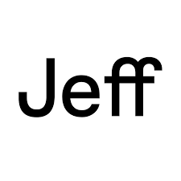
Add Jeff product screens, franchise tools or launch visualsCitibox
Last-mile logistics ecosystem
Led digital product squads building a new logistics ecosystem around smart mailboxes, parcel delivery, courier operations and consumer pickup flows.
Product Work
- Led multiple squads building apps and web tools for sellers, couriers, installers, admins and consumers.
- Launched three mobile apps and two web apps for the operational ecosystem.
- Aligned product strategy with executive teams and strategic partners.
Outcomes
- Reached product-market fit in an emerging last-mile logistics category.
- Helped scale the organization from roughly 15 to 120 people.
- Worked on one of the company's core product and technology transitions.
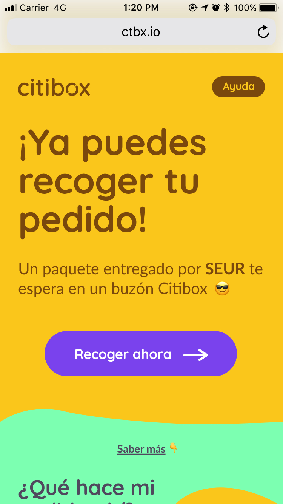
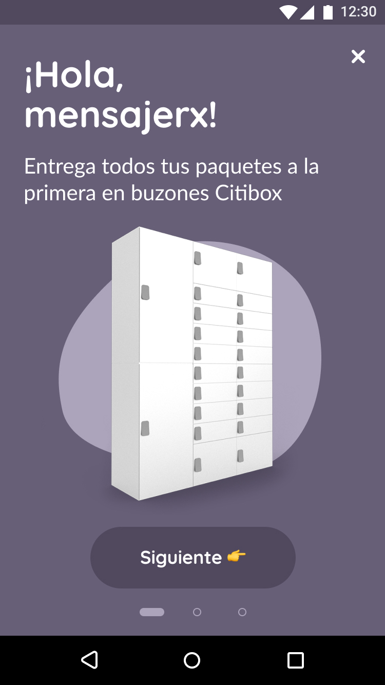
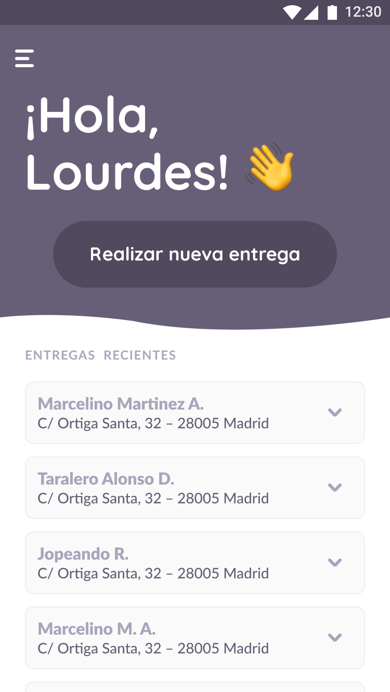
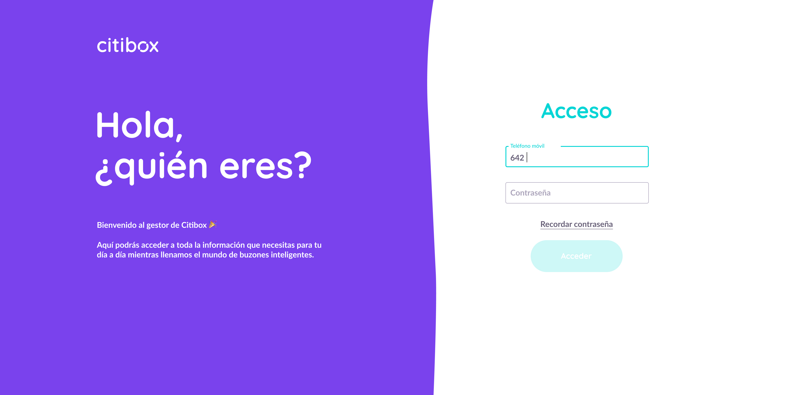
Groopify
Social discovery app acquired by Paktor
Led product and mobile work for a social discovery product focused on meeting new people by connecting groups of friends.
Product Work
- Led product definition, design, development and analytics for the iOS app.
- Helped rebuild the mobile app after a major product pivot.
- Worked closely with the CPO and Founder on product-market fit.
Scope
- Managed and mentored a two-person mobile team.
- Worked on a product with +200K MAU across 40 countries.
- Contributed to culture and team rituals during a high-change period.
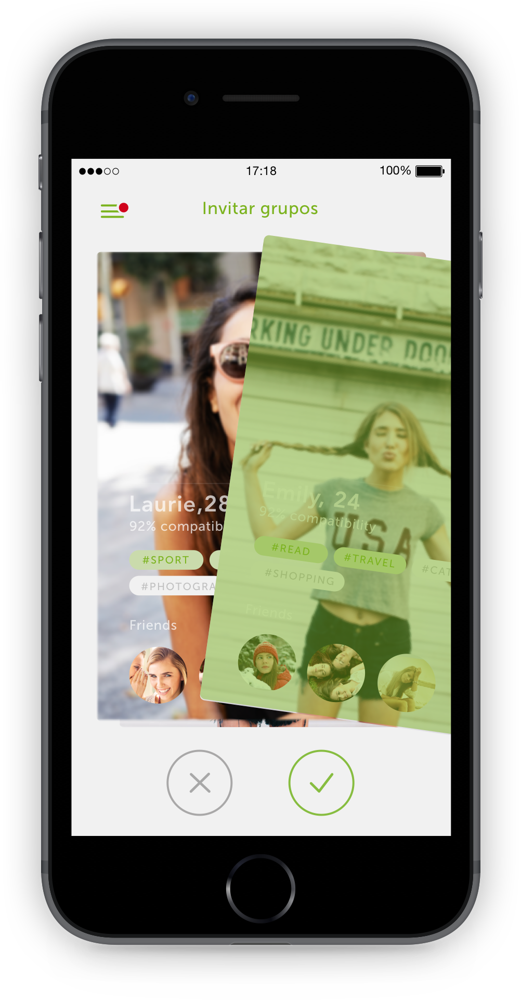
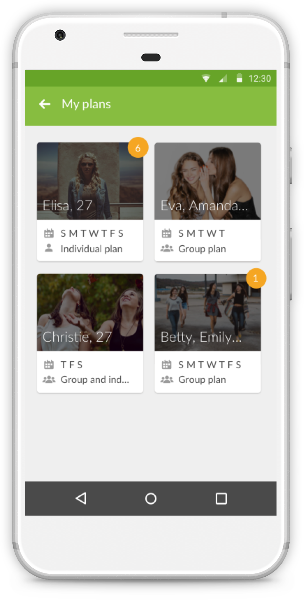
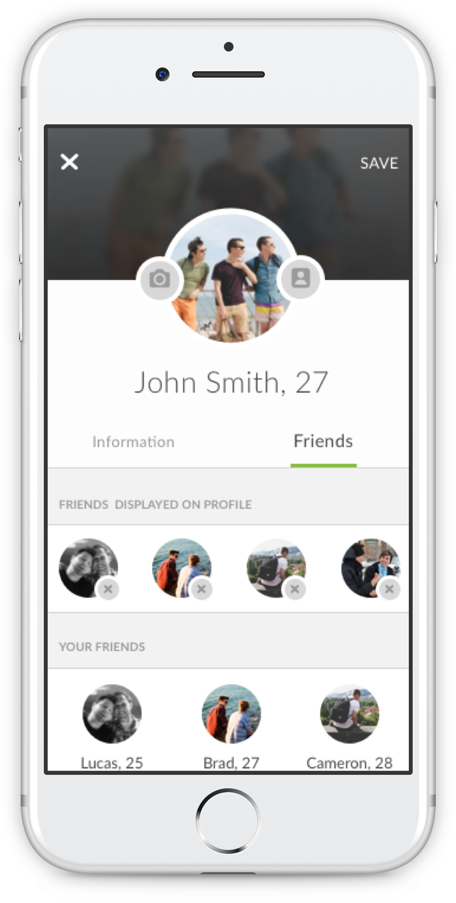
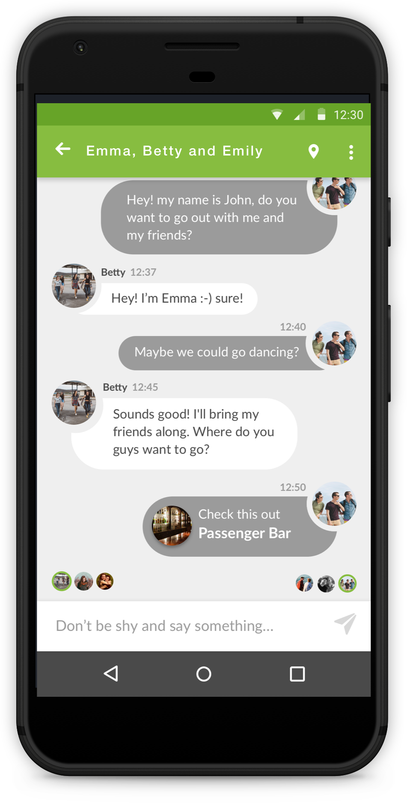
Dinata
Assistive communication app
Founded a social-impact startup to help people with speech disabilities communicate through their device.
Product Work
- Founded and led a five-person team from concept to launch.
- Built a mobile assisted-communication app for users who could not speak.
- Learned the full startup path from product creation to funding, awards and distribution.
Recognition
- Won social entrepreneurship awards from Telefonica Foundation and Ashoka.
- Received seed capital and intensive entrepreneurship support.
- Profitable since 2014.
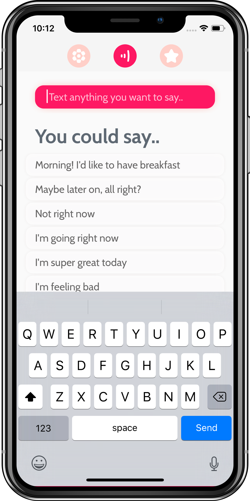
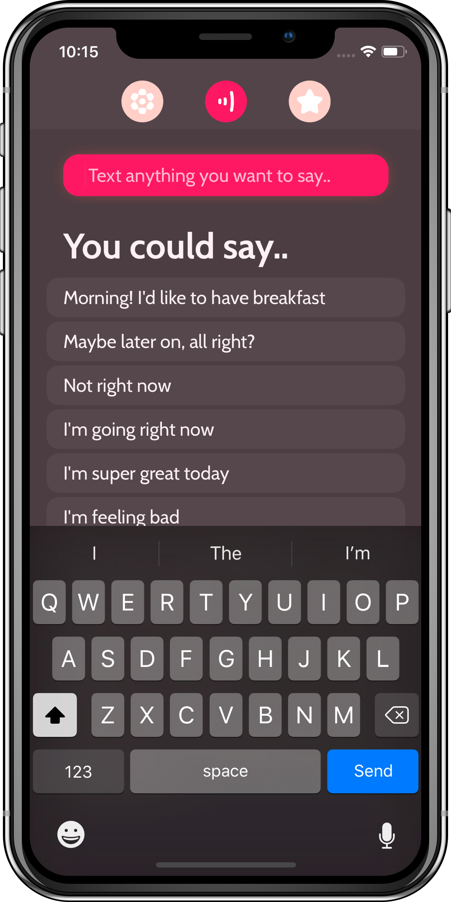
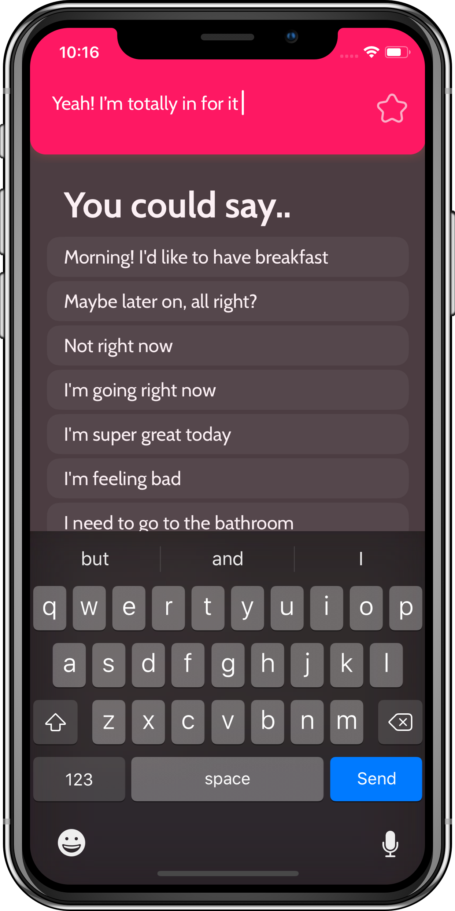
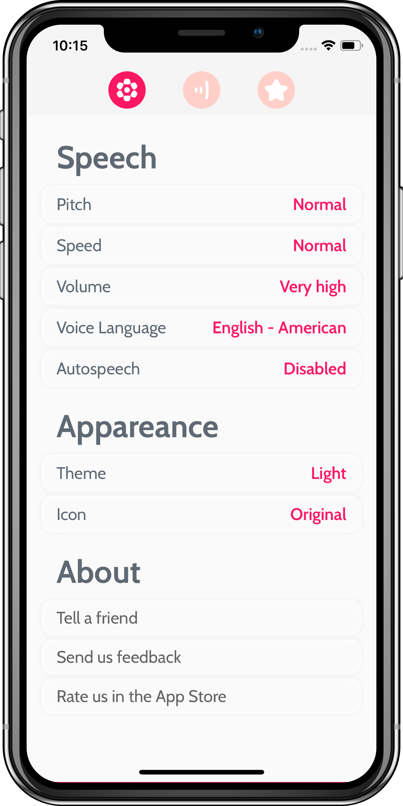
Yaap
Spain's first P2P payments app
Led iOS development for Yaap Money, a P2P payments product backed by CaixaBank, Banco Santander and Telefonica.
Product Work
- Led a two-person team defining and developing the iOS app.
- Built new features in a high-growth mobile payments product.
- Worked with Product, Design and BI to define requirements using data.
Outcomes
- Contributed to scaling the user base from 80K to 400K in Spain.
- Helped shape a pioneering mobile payments experience.
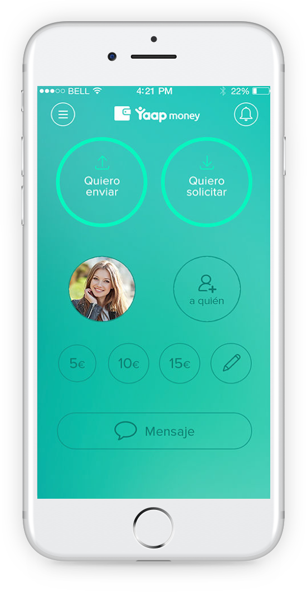
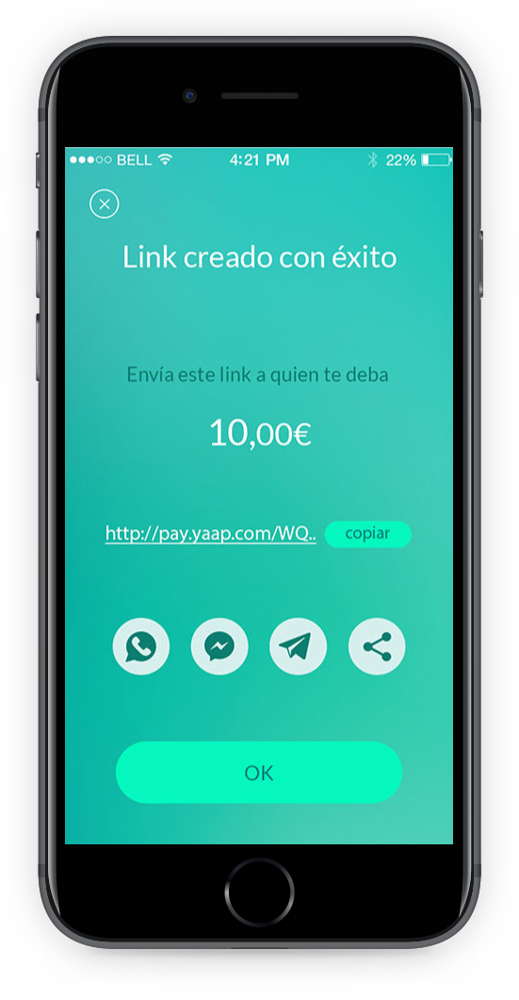
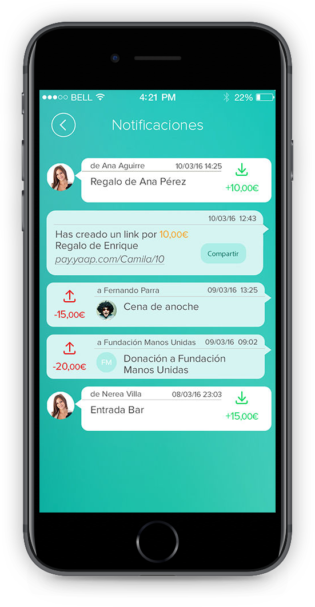
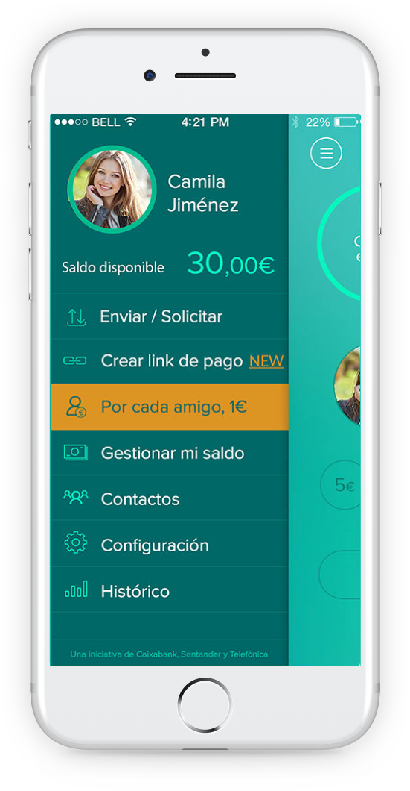